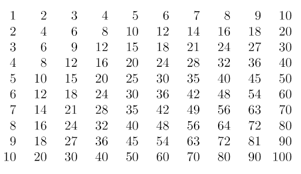

List comprehension¶
Gebruik list comprehension om de volgende problemen op te lossen.
Opgaven¶
mult_of_five¶
De functie mult_of_five accepteert een integer n en heeft als resultaat een list met de veelvouden 1 tot en met n van 5. Gebruik hier de ingebouwde functie range.
De functie range begint met 0, je zult voor 1 als volgt moeten corrigeren:
range(1, n + 1)
Zie verder ook de documentatie voor range.
def mult_of_five(n):
"""Return a list containing the first n multiples of 5
"""
return [...]
Gebruik de volgende assertions om jow oplossingen te testen:
assert mult_of_five(0) == []
assert mult_of_five(1) == [5]
assert mult_of_five(3) == [5, 10, 15]
divisible_by¶
De functie divisible_by accepteert een integer n en een list L en geeft als resultaat een list terug met alle waarden in L deelbaar door n.
def divisible_by(n, L):
"""Return a list with values in L divisible by n
"""
return [...]
Gebruik de volgende assertions om jouw oplossing te testen:
assert divisible_by(5, [15, 0, 23, 4]) == [15, 0]
assert divisible_by(3, [2, 4, 8, 10]) == []
assert divisible_by(2, []) == []
starts_with¶
De functie starts_with accepteer een string s en een list met string L en heeft als resultaat een list met alle waarden in L die beginnen met s.
je mag de ingebouwde string methode
startswithniet gebruikenje mag geen recursie gebruiken
def starts_with(s, L):
"""Return all strings in L which start with s
"""
return [...]
Gebruik de volgende assertions om jouw oplossing te testen:
assert starts_with("a", []) == []
assert starts_with("a", ["bbc", "brits", "omroep"]) == []
assert starts_with("a", ["abc", "cde", "aha", "abba"]) == ["abc", "aha", "abba"]
assert starts_with("ab", ["abc", "cde", "aha", "abba"]) == ["abc", "abba"]
assert starts_with("abc", ["abc", "cde", "aha", "abba"]) == ["abc"]
assert starts_with("abcd", ["abc", "cde", "aha", "abba"]) == []
double_letters¶
De functie double_letters accepteert een list met strings L en heeft als resultaat een list met alle waarden verdubbeld.
def double_letters(L):
"""Double all letters in L
"""
return [...]
Gebruik de volgende assertions om jouw oplossing te testen:
assert double_letters(["a"]) == ["aa"]
assert double_letters(["a", "1", "23"]) == ["aa", "11", "2323"]
num_as¶
De functie num_as accepteert een list met met strings L en heeft als resultaat een integer het aantal keer dat het karakter “a” zich in L bevindt.
def num_as(L):
"""Count the number of a's in L
"""
return sum([...])
Gebruik de volgende assertions om jouw oplossing te testen:
assert num_as(["a", "b", "c", "a", "d"]) == 2
assert num_as(["y", "b", "c", "x", "d"]) == 0
vwl¶
De functie vwl accepteert een string s en heeft als resultaat het aantal klinkers in s. Klinkers zijn “a”, “e”, “i”, “o” en “u”.
gebruik hier de ingebouwde functie
sumin combinatie met list comprehension
def vwl(s):
''' Return the number of vowels in a string
'''
...
Gebruik de volgende assertions om jouw oplossing te testen:
assert vwl("appel") == 2
assert vwl("bbc") == 0
assert vwl("oma") == 2
add_tax¶
De functie add_tax accepteert een getal (float of integer) t groter dan 0 en een lijst met getallen L. t staat voor een percentage, L bevat prijzen van artikelen en het resultaat is een lijst met prijzen verhoogd met percentage t.
def add_tax(t, L):
"""Increment each item in L with t percent tax
"""
return [...]
Gebruik de volgende assertions om jouw oplossing te testen:
assert add_tax(7, [10, 100, 30, 40]) == [10.7, 107.0, 32.1, 42.8]
assert add_tax(7, [0, 16, 8]) == [0.0, 17.12, 8.56]
above_below_freeze¶
De functie above_below_freeze accepteert een lijst met getallen (integer of float) L die staan voor temperaturen en heeft als resultaat een list waar voor elke waarde “onder”, “boven” of “gelijk” aan het vriespunt (0 graden) is ingevuld.
je mag hier een hulpfunctie schrijven, indien nodig
def above_below_freeze(L):
"""Return whether each item in L is below, above or
equals freezing temperature as a string representation
"""
...
Gebruik de volgende assertions om jouw oplossing te testen:
assert above_below_freeze([-1, 0, 10]) == ["onder", "gelijk", "boven"]
assert above_below_freeze([21, -21, 0]) == ["boven", "onder", "gelijk"]
zipper¶
De functie zipper accepteert twee lists L1 en L2 van gelijke lengte. Het resultaat is een list of lists waar elk element de paarsgewijze combinatie (“ritsen”) van waarden in L1 en L2 is.
def zipper(L1, L2):
"""Pairwise combine lists L1 and L2
"""
return [...]
Gebruik de volgende assertions om jouw oplossing te testen:
assert zipper([1, 3, 5], [2, 4, 6]) == [[1, 2], [3, 4], [5, 6]]
assert zipper([10, 9, 12], ["jan", "feb", "mar"]) == [[10, "jan"], [9, "feb"], [12, "mar"]]
only_evens¶
De functie only_evens accepteert een list met integers L en geeft als resultaat een list met de even getallen in L.
gebruik de hulpfunctie
is_evenin de list comprehension.
def is_even(x):
"""Return True if x is even, False otherwise
"""
return x % 2 == 0
def only_evens(L):
"""Returns a list containing the even numbers in L
"""
return [...]
Gebruik de volgende assertions om jouw oplossing te testen:
assert only_evens([1, 1, 1]) == []
assert only_evens([2, 2, 2]) == [2, 2, 2]
assert only_evens([0, 1, 2, 3]) == [0, 2]
mul_table¶
Een vermenigvuldigingstabel ziet er als volgt uit

Met een vermenigvuldigingstabel kan het resultaat van een vermenigvuldiging worden opgezocht, bijvoorbeeld om het resultaat van \(4 \times 4\) op te zoeken kijk je waar de kolommen en rijen elkaar kruisen op positie 4 (dit is 16).
De functie mul_table accepteert een integer n en heeft als resultaat de vermenigvuldigingstabel van n als een list of lists. Gebruik hier de ingebouwde functie range.
Bijvoorbeeld, mul_table(5) zal het volgende resultaat geven:
[[1, 2, 3, 4, 5],
[2, 4, 6, 8, 10],
[3, 6, 9, 12, 15],
[4, 8, 12, 16, 20],
[5, 10, 15, 20, 25]]
De functie range begint met 0, je zult voor 1 als volgt moeten corrigeren:
range(1, n + 1)
Zie verder ook de documentatie voor range.
def mul_table(n):
"""Returns a multiplication table for n
"""
return [...]
Gebruik de volgende assertions om jouw oplossing te testen:
assert mul_table(0) == []
assert mul_table(1) == [[1]]
assert mul_table(2) == [[1, 2], [2, 4]]
assert mul_table(3) == [[1, 2, 3], [2, 4, 6], [3, 6, 9]]
Oplossingen¶
mult_of_five¶
def mult_of_five(n):
"""Return a list containing the first n multiples of 5
"""
return [x * 5 for x in range(1, n + 1)]
assert mult_of_five(0) == []
assert mult_of_five(1) == [5]
assert mult_of_five(3) == [5, 10, 15]
divisible_by¶
def divisible_by(n, L):
"""Return a list with values in L divisible by n
"""
return [x for x in L if x % n == 0]
assert divisible_by(5, [15, 0, 23, 4]) == [15, 0]
assert divisible_by(3, [2, 4, 8, 10]) == []
assert divisible_by(2, []) == []
starts_with¶
def starts_with(s, L):
"""Return all strings in L which start with s
"""
return [x for x in L if s == x[:len(s)]]
assert starts_with("a", []) == []
assert starts_with("a", ["bbc", "brits", "omroep"]) == []
assert starts_with("a", ["abc", "cde", "aha", "abba"]) == ["abc", "aha", "abba"]
assert starts_with("ab", ["abc", "cde", "aha", "abba"]) == ["abc", "abba"]
assert starts_with("abc", ["abc", "cde", "aha", "abba"]) == ["abc"]
assert starts_with("abcd", ["abc", "cde", "aha", "abba"]) == []
double_letters¶
def double_letters(L):
"""Double all letters in L
"""
return [x * 2 for x in L]
assert double_letters(["a"]) == ["aa"]
assert double_letters(["a", "1", "23"]) == ["aa", "11", "2323"]
num_as¶
def num_as(L):
"""Count the number of a's in L
"""
return sum([1 for x in L if x == "a"])
assert num_as(["a", "b", "c", "a", "d"]) == 2
assert num_as(["y", "b", "c", "x", "d"]) == 0
vwl¶
def vwl(s):
''' Return the number of vowels in a string
'''
return sum([1 for x in s if x in "aeiou"])
assert vwl("appel") == 2
assert vwl("bbc") == 0
assert vwl("oma") == 2
add_tax¶
def add_tax(t, L):
"""Increment each item in L with t percent tax
"""
return [x + (x * t / 100) for x in L]
assert add_tax(7, [10, 100, 30, 40]) == [10.7, 107.0, 32.1, 42.8]
assert add_tax(7, [0, 16, 8]) == [0.0, 17.12, 8.56]
above_below_freeze¶
def above_below(t):
"""Helper function for above_below_freeze
"""
if t > 0:
return "boven"
elif t < 0:
return "onder"
else:
return "gelijk"
def above_below_freeze(L):
"""Return whether each item in L is below, above or
equals freezing temperature as a string representation
"""
return [above_below(x) for x in L]
assert above_below_freeze([-1, 0, 10]) == ["onder", "gelijk", "boven"]
assert above_below_freeze([21, -21, 0]) == ["boven", "onder", "gelijk"]
zipper¶
def zipper(L1, L2):
"""Pairwise combine lists L1 and L2
"""
return [[L1[x], L2[x]] for x in range(len(L1))]
assert zipper([1, 3, 5], [2, 4, 6]) == [[1, 2], [3, 4], [5, 6]]
assert zipper([10, 9, 12], ["jan", "feb", "mar"]) == [[10, "jan"], [9, "feb"], [12, "mar"]]
only_evens¶
def is_even(x):
"""Return True if x is even, False otherwise
"""
return x % 2 == 0
def only_evens(L):
"""Returns a list containing the even numbers in L
"""
return [x for x in L if is_even(x)]
assert only_evens([1, 1, 1]) == []
assert only_evens([2, 2, 2]) == [2, 2, 2]
assert only_evens([0, 1, 2, 3]) == [0, 2]
mul_table¶
Stel dat we een \(N \times N\) vermenigvuldigingstabel willen opstellen voor \(N=5\)
n = 5
Met behulp van de tip (range laten tellen vanaf 1) kan een eerste rij van de tabel met een list comprehension worden opgesteld
[x for x in range(1, n + 1)]
[1, 2, 3, 4, 5]
Omdat dit de eerste vermenigvuldiging is van x (de eerste rij, dus 1) kan het ook worden geschreven als
[x * 1 for x in range(1, n + 1)]
[1, 2, 3, 4, 5]
Volgens dit patroon zal de tweede rij in de vermenigvuldigingstabel als volgt zijn
[x * 2 for x in range(1, n + 1)]
[2, 4, 6, 8, 10]
Meer algemeen kan dit worden geschreven als
[x * y for x in range(1, n + 1)]
waar x staat voor de kolom (5 posities in totaal, want \(N=5\)) en y voor de rij (ook 5 in totaal, want \(N=5\)). De rijen moeten n keer worden herhaald voor y zodat je uiteindelijk met list comprehension tot de volgende list of lists kan komen
def mul_table(n):
"""Returns a multiplication table for n
"""
return [[x * y for x in range(1, n + 1)] for y in range(1, n + 1)]
assert mul_table(0) == []
assert mul_table(1) == [[1]]
assert mul_table(2) == [[1, 2], [2, 4]]
assert mul_table(3) == [[1, 2, 3], [2, 4, 6], [3, 6, 9]]